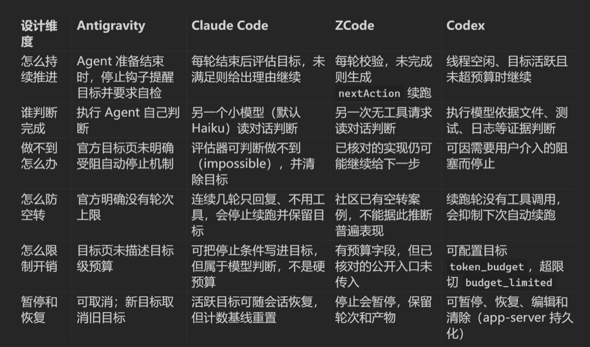
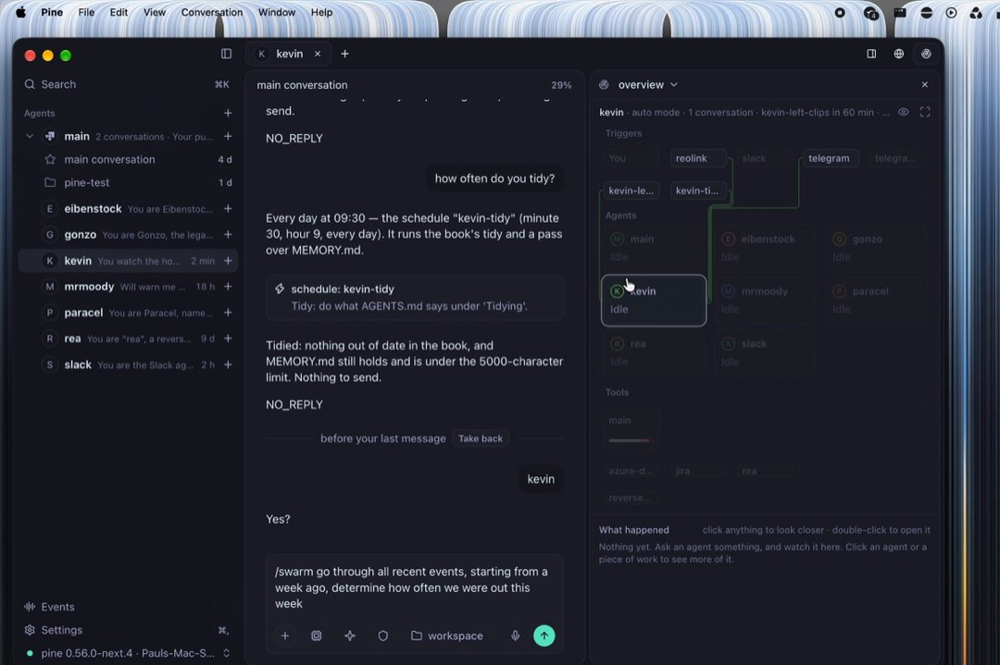

本期速览
01 Codex等4家/goal指令设计对比
02 Pine让Agent订阅事件自动执行
03 ARIS用13条流水线自动改论文
04 InstructReplay回放自答防掉分
05 wechat-selkies容器隔离跑微信
01｜Codex等4家/goal指令设计对比
来源（X） · @chasen_liao · 2026-11-24 17:36
“如何在 Agent 里面设计一个 /goal 指令”
听起来像套个 while 循环就能搞定，真要做到能放手让它跑一晚上，里面门道特别多 —— 谁来判断任务真做完了、做不到怎么退出来、光说话不干活怎么防空转、账单怎么兜底
我专门去扒了 Antigravity、Claude Code、ZCode、Codex 这几家的设计
横向对比完 6 个维度发现，这 4 家刚好代表了 4 种完全不同的设计路线
Antigravity -- 最轻，靠收工前的停止钩子让 Agent 自检
Claude Code -- 把裁判权拆出去，请独立小模型读对话判卷
ZCode -- 每轮校验后显式吐一条 nextAction 推着往下跑
Codex -- 最重，直接做成带 token 硬预算、能持久化暂停恢复的状态机，也是最早做这个功能的
总对比表放图里了，下面评论区我把这 4 家一家一条单独拆透
最后附一条设计 /goal 设计的取舍，想学 Agent 设计或准备 面试 的建议先收藏 🧵

02｜Pine让Agent订阅事件自动执行
来源（X） · @meow2149 · 2026-11-25 01:31
和常见的聊天式 Agent 不太一样，Pine 可以让 Agent 订阅各种外部事件，满足特定条件时自动触发，不用每次都主动打开聊天窗口发指令。
比如让 Agent 监听某个文件夹，一有新的扫描文件就自动提取内容、整理摘要；或者订阅 Slack 消息、邮件和网页变化，发现需要处理的内容就自动执行，再通过 Telegram 通知你。
Pine 本身也支持代码开发、MCP、Skills、记忆和多 Agent 协作。事件监听、定时任务和工具接入都能直接用自然语言配置，还能作为后台服务持续运行，关掉终端界面也不会中断。
项目提供终端和桌面客户端，支持 macOS、Linux 和 Windows，也能用手机远程连接自己的 Agent。经常需要让 Agent 持续监控任务、处理重复性工作的朋友，可以研究一下。

03｜ARIS用13条流水线自动改论文
来源（X） · @fngly343149 · 2026-11-24 18:10
wanshuiyin/Auto-claude-code-research-in-sleep（ARIS）2026-03-10 建仓，纯 Markdown 技能，不写代码也能配。
· 流程：W1 到 W6 加 Wiki、WM 共 13 条命名流水线，论文、实验、综述各有入口
· 成绩：一篇真实 ICLR 2026 理论稿，自动改进从 4/10 提到 8.5/10，两轮修完
· 成绩：自动评审循环过夜跑 4 轮，5/10 到 7.5/10，中途跑了 20 多个 GPU 实验
· 产出：从一份 NARRATIVE_REPORT.md 生成 9 页论文、7 节、29 条引用、4 张图、2 张对比表，编译零错误零未定义引用
怎么用：git clone 之后把 skills 目录链进 Claude Code 的技能路径，再跑 /paper-writing 或 /rebuttal。
对我们：省的是改稿和补实验的几十个小时；亏在它不懂你的领域直觉，方向错了它会把错的做得很完整。
判断：赶投稿期的人最值，省的是几十小时改稿；纯工程岗别装，这套是给写论文的人做的。
#论文 #ClaudeCode
https://github.com/wanshuiyin/Auto-claude-code-research-in-sleep

04｜InstructReplay回放自答防掉分
来源（X） · @xiaoanlab · 2026-11-25 16:28
给已调好的模型补新知识，是最常见的微调场景。但标准微调有个隐性代价：指令遵循、推理、代码能力平均掉 35 分。论文发现背后有个信号——微调后的模型回答至少缩短一半，答得越短、离原模型越远，错得越多。
InstructReplay 的做法很轻：微调之前，先让初始模型对一批通用指令自己作答一次，留下一份"原样答案"；微调时一边学新知识，一边把模型锚定在这些自己的回答上。对照实验说明，起作用的正是 replay 自己答案这一步，而不是损失换了什么形式。
三类模型家族、两个领域实测：五项通用基准上的平均下滑从 28.1 分压到 2.4 分，新知识学得和标准微调一样好；六种设置下都优于其他七种自适应方法。
对做领域微调的人最直接——补知识前先留一份通用指令自答快照，代价小、收益明确。局限也要说清：论文只验证了事实类微调，换成风格或行为微调是否同样有效，还没验证。
你给模型补过新知识吗？微调后有没有发现它"变笨了"？
#大模型微调 #AI论文
http://arxiv.org/abs/2611.32918
05｜wechat-selkies容器隔离跑微信
来源（X） · @lxfater · 2026-11-25 10:10
电脑本来就能装微信，干嘛费劲塞进 Docker，还让这么多人狂收藏？
因为很多人的群聊和提醒全在微信里，想让 AI 自动发通知
可微信个人号压根没给官方接口
没接口就只能硬来，以前要么装改底层代码的外挂，动不动就封号
要么让 AI 直接控你电脑，它一干活就抢走鼠标键盘，你根本没法做事
那把微信塞进 Docker，怎么就把这两个死结解开了？
开源项目 wechat-selkies 的思路很直接
它用 Docker 隔出一个独立小盒子，里面跑腾讯官方的 Linux 版微信
再把微信画面直接投到浏览器网页里
画面进了网页，接上 Hermes 这类 AI 助手
它就能在网页里像真人一样找群、打字发消息
微信关在盒子里，AI 怎么点都不抢你电脑的鼠标键盘
跑的又是官方客户端，不用改底层代码，踩外挂封号雷的概率小多了！
听着挺丝滑，对不对？
但先别急着把主力微信号挂上去，这招没你想的那么省心
第一，跑官方客户端不等于不会封号
仓库免责声明写得很明白，仅供个人学习，风险自己扛
AI 模拟操作本质上还是自动化，一旦高频群发，一样可能触发微信风控
第二，挂上去也没法彻底不管
作者自己在仓库里提过，Linux 微信挂久了容易掉线或凌晨退出
项目虽然加了定时重启，真掉线了一样得拿手机重新扫码
所以最稳的用法是拿闲置小号或测试号跑低频提醒，别拿主力大号搞群发
想折腾的直接看项目，4000 多星，MIT 协议👇
https://github.com/nickrunning/wechat-selkies